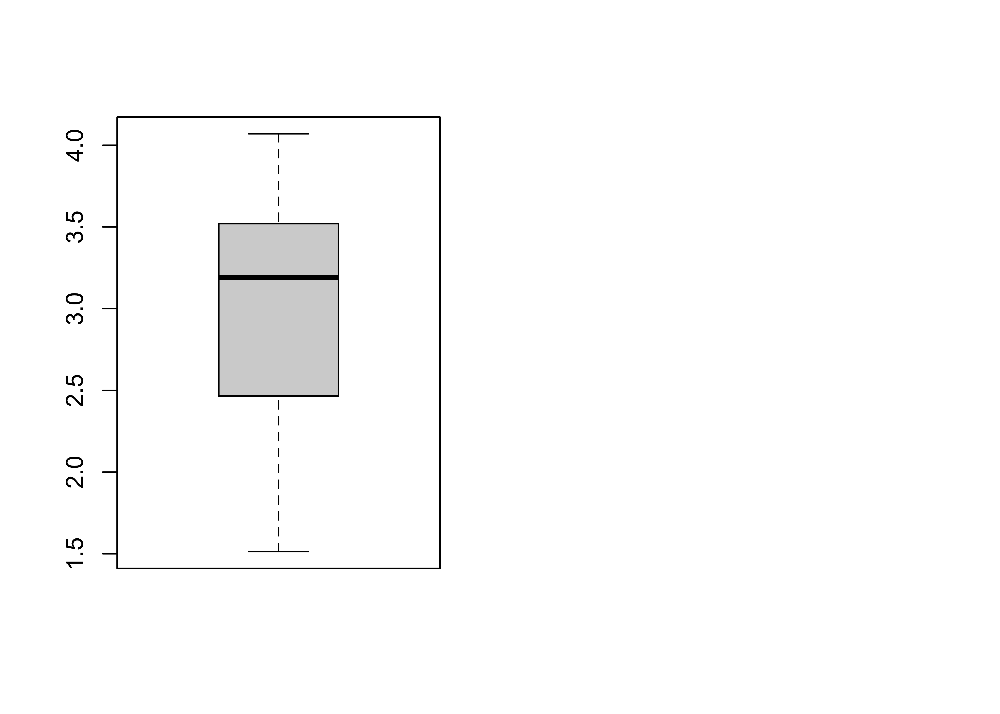

Chapter 4 Data 전처리-이상치 처리
회귀, 상관 등 각종 분석을 진행 하다 보면, 이상치 유무에 따라 결과가 달라지는 것을 경험하게 됩니다.
제가 주로 분석하는 조직문화 데이터에는 불성실 응답 등 이상치가 꽤 포함되어 있습니다.
저는 문항 간 상관/회귀 등의 전반적인 트렌드를 볼 때 이상치를 제외하고 분석하고 있으며,
이러한 이상치들만 모아 놓고 이상치 탐색을 통해 이상치의 특성을 밝히는 작업도 하고 있습니다.현업 데이터를 기준으로 분석을 진행하실 때는,
이상치 분석에는 크게 시간을 들이지 않으시는 것을 추천 드립니다.분석을 진행하기 전에 간단하게 boxplot을 통해 이상치를 확인하시고,
이상치를 제거할지, 대체할지 판단하시어 제거/대체 하신 후 분석을 진행하시면 됩니다.이번에는 R 내장 데이터인 mtcars 데이터를 활용하여 진행해보겠습니다.
4.1 이상치 확인
통계적으로는 상/하위 3 표준편차를 벗어나거나 1.5 IQR을 벗어나면
극단치(이상치)로 판단한다고 합니다.
이상치 한눈에 보기(출처: 실무에 써먹는 머신러닝(with R))
위 그림으로 보시면 더 명확하게 이해가 되실 것 같습니다.
\[하위\ 이상값은\\ 1분위수 - 1.5 \times (IQR:3분위수 - 1분위수) \ 보다\ 작은\ 값\]
\[상위\ 이상값은 \\ 3분위수 + 1.5 \times (IQR:3분위수 - 1분위수) \ 보다\ 큰\ 값 \]
- R에서는 boxplot을 통해 간단하게 이상치가 있는지 확인하실 수 있습니다.
먼저, mtcars 데이터를 살펴볼까요?
## Rows: 32
## Columns: 11
## $ mpg <dbl> 21.0, 21.0, 22.8, 21.4, 18.7, 18.1, 14.3, 24.4, 22.8, 19.2, 17.…
## $ cyl <dbl> 6, 6, 4, 6, 8, 6, 8, 4, 4, 6, 6, 8, 8, 8, 8, 8, 8, 4, 4, 4, 4, …
## $ disp <dbl> 160.0, 160.0, 108.0, 258.0, 360.0, 225.0, 360.0, 146.7, 140.8, …
## $ hp <dbl> 110, 110, 93, 110, 175, 105, 245, 62, 95, 123, 123, 180, 180, 1…
## $ drat <dbl> 3.90, 3.90, 3.85, 3.08, 3.15, 2.76, 3.21, 3.69, 3.92, 3.92, 3.9…
## $ wt <dbl> 2.620, 2.875, 2.320, 3.215, 3.440, 3.460, 3.570, 3.190, 3.150, …
## $ qsec <dbl> 16.46, 17.02, 18.61, 19.44, 17.02, 20.22, 15.84, 20.00, 22.90, …
## $ vs <dbl> 0, 0, 1, 1, 0, 1, 0, 1, 1, 1, 1, 0, 0, 0, 0, 0, 0, 1, 1, 1, 1, …
## $ am <dbl> 1, 1, 1, 0, 0, 0, 0, 0, 0, 0, 0, 0, 0, 0, 0, 0, 0, 1, 1, 1, 0, …
## $ gear <dbl> 4, 4, 4, 3, 3, 3, 3, 4, 4, 4, 4, 3, 3, 3, 3, 3, 3, 4, 4, 4, 3, …
## $ carb <dbl> 4, 4, 1, 1, 2, 1, 4, 2, 2, 4, 4, 3, 3, 3, 4, 4, 4, 1, 2, 1, 1, …- mtcars 데이터는 아래와 같은 변수로 구성되어 있습니다.
[, 1] mpg Miles/(US) gallon
[, 2] cyl Number of cylinders
[, 3] disp Displacement (cu.in.)
[, 4] hp Gross horsepower
[, 5] drat Rear axle ratio
[, 6] wt Weight (1000 lbs)
[, 7] qsec 1/4 mile time
[, 8] vs Engine (0 = V-shaped, 1 = straight)
[, 9] am Transmission (0 = automatic, 1 = manual)
[,10] gear Number of forward gears
[,11] carb Number of carburetors- mtcars 데이터의 wt 값의 이상치를 보기 위해 아래와 같이 박스플롯을 그려보았습니다.

상위 극단치 경계값을 넘어가는 값이 보입니다.
boxplot을 통해 위와 같이 극단치를 넘어가는 이상치가 있는 것으로 확인 된 경우,
아래와 같이 summary 함수, IQR 함수, which 함수를 통해 이상치가 포함되어 있는 행을 확인하실 수 있습니다.
## Min. 1st Qu. Median Mean 3rd Qu. Max.
## 1.513 2.581 3.325 3.217 3.610 5.424# 3분위 값에 1.5IQR을 더한 상위 극단치보다 큰 값이 몇 행에 있는지 확인합니다.
which(mtcars$wt>summary(mtcars$wt)[5] + 1.5*IQR(mtcars$wt))## [1] 15 16 17# 15, 16, 17번째 행의 wt 값이 이상치로 확인되었습니다.
# boxplot에서 확인했듯이 하위 극단치는 없는 것으로 나옵니다.
which(mtcars$wt<summary(mtcars$wt)[2] - 1.5*IQR(mtcars$wt))## integer(0)4.2 이상치 제거 및 대체
4.2.1 이상치 제거
- 앞서 상/하위 극단치를 확인 한 결과, 상위 극단치만 있는 것으로 확인 되었습니다.
- 이상치를 제거하기 위해서는 아래와 같이 이상치를 갖고 있는 행만 제거해주면 됩니다.
mtcars_reshape <- mtcars[-which(mtcars$wt>summary(mtcars$wt)[5] + 1.5*IQR(mtcars$wt)),]
par(mfrow=c(1,2))
boxplot(mtcars_reshape$wt)
mtcars[-which(mtcars$wt>summary(mtcars$wt)[5] + 1.5*IQR(mtcars$wt)),] 의 뜻은
mtcars 데이터 중, 극단치보다 높은 행만 - 제거 하겠다는 것입니다.극단치보다 높은 값을 제거하고, 다시 박스플롯을 그려보니, 상위 극단치가 제거 되었음을 알 수 있습니다.
4.2.2 이상치 대체
- 이상치를 대체하고자 하시면, 아래와 같이 직접 값을 지정해주시면 됩니다.
저는 상위 극단치를 넘는 이상치를 NA 값으로 수정해보았습니다.
mtcars[which(mtcars$wt>summary(mtcars$wt)[5] + 1.5*IQR(mtcars$wt)),]$wt <- NA
- 위의 행을 실행하고 나면, 이상치가 있던 15,16,17행에 NA 값이 들어가 있는 것을 보실 수 있습니다.
## [1] 2.620 2.875 2.320 3.215 3.440 3.460 3.570 3.190 3.150 3.440 3.440 4.070
## [13] 3.730 3.780 NA NA NA 2.200 1.615 1.835 2.465 3.520 3.435 3.840
## [25] 3.845 1.935 2.140 1.513 3.170 2.770 3.570 2.7804.3 이상치 처리 패키지
이상치를 찾고 처리하기 위해
DMwR(카이제곱분포 활용), outlier(표준점수 활용), Grubb’s Test(편차 활용),
Robust Test(MAD(중간값과 Xi값 편차) 활용) 등 다양한 패키지와 함수들이 준비되어 있습니다.더 자세한 내용에 대해서는 아래 URL 참고 부탁드립니다.